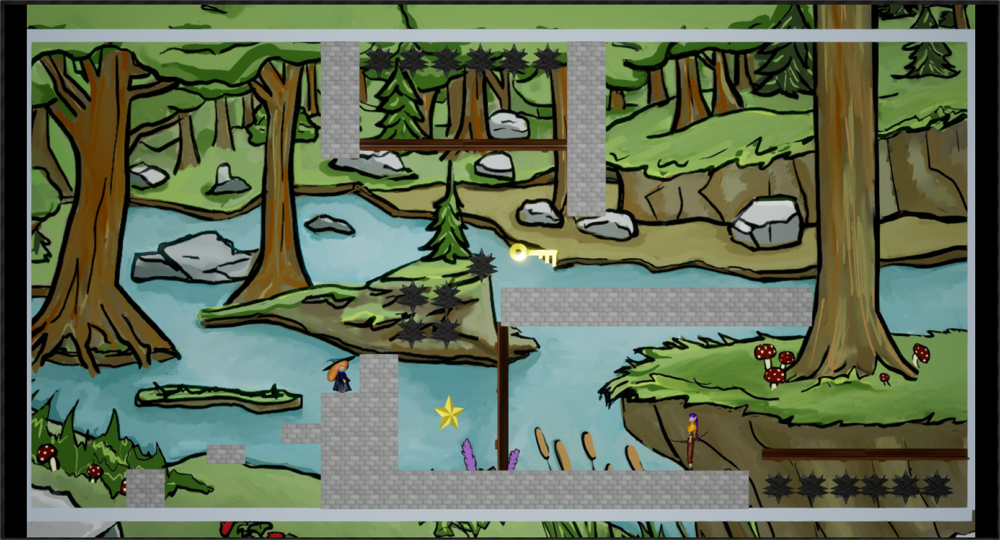

AR Visualization
Unity and Meta Quest rehabilitation visualization work for post-stroke motor recovery research.
Unity and Meta Quest rehabilitation visualization work for post-stroke motor recovery research.
A top-down party game about cleaning up the environment, built as a University of Utah capstone project and released on Steam.

A cooperative platformer where two players share one keyboard and mouse to solve character-driven puzzles.
A short machinima created with a student team over 8 weeks.